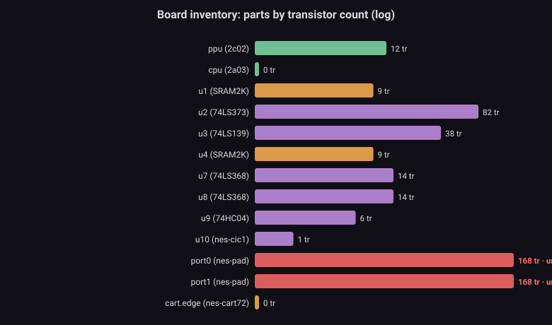
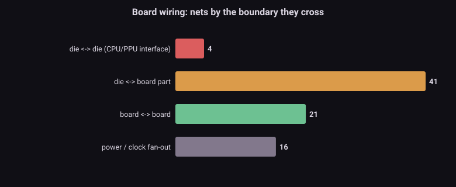

The problem問題 Silicon does not run alone矽電路不是單獨運轉的
A running NES is two Visual6502-derived dies wired to a handful of 7400-series parts. Some of those parts are load-bearing for accuracy: the 74LS373 octal latch (u2) multiplexes the PPU's address/data pins — it is the boss of the ALERead campaign — and the address decoder (u3) gates every $2xxx access. In the S1 engine these are switch-level modules like the dies; in a lesser emulator they would be behavioral guesses. But two of them cannot be switch-level at all, and knowing which, and why, is what M5 formalizes. The goal: a board-level component library where each part is a first-class device with real pin semantics, not a hack buried in a callback.
一台運轉的 NES,是兩顆 Visual6502 衍生晶粒接上一小把 7400 系列零件。其中有些零件對精度是承重的:74LS373 八位閂鎖(u2)多工 PPU 的位址/資料腳 —— 它是 ALERead 戰役的大魔王 —— 而位址解碼器(u3)閘控每一次 $2xxx 存取。在 S1 引擎裡這些是跟晶粒一樣的開關級模組;在較差的模擬器裡它們會是行為層的猜測。但其中有兩個根本不能是開關級,知道是哪個、為什麼,正是 M5 要形式化的。目標:一個板級元件庫,每個零件都是有真實 pin 語意的一級元件,而不是埋在回呼裡的 hack。
The inventory清單 Thirteen parts, and their real sizes十三個零件,以及它們真實的大小
| Part零件 | Type型號 | Transistors電晶體 | Role角色 |
|---|---|---|---|
| port0 / port1 | nes-pad | 168 ×2 | controller — undrivable手把 —— 不可驅動 |
| u2 | 74LS373 | 82 | octal latch (the ALERead boss)八位閂鎖(ALERead 魔王) |
| u3 | 74LS139 | 38 | address decoder ($2xxx gate)位址解碼器($2xxx 閘) |
| u7 / u8 | 74LS368 | 14 ×2 | hex buffer (the u7/u8 twins)六路緩衝(u7/u8 孿生) |
| u1 / u4 | SRAM2K | 9 ×2 | work / video RAM工作 / 影像 RAM |
| u9 | 74HC04 | 6 | CMOS inverterCMOS 反相器 |
| u10 | nes-cic1 | 1 | lockout CIC防拷 CIC |
| ppu / cpu | 2c02 / 2a03 | external | the dies (netlist in separate files)晶粒(網表在外部檔) |
The two dies carry their ~28,000 transistors in external transdefs files (M1's territory); the counts here are the board glue — and it is a real switch-level circuit, not a stub. The 74LS373's 82 transistors are exactly the octal transparent latch M1/M4 dissected; that it is modeled, not hacked, is why the ALERead fix could be a phase mux rather than a fabricated byte.兩顆晶粒的 ~28,000 顆電晶體在外部 transdefs 檔裡(M1 的地盤);這裡的數字是板級膠合邏輯 —— 而且是真的開關級電路,不是空殼。74LS373 的 82 顆電晶體,正是 M1/M4 解剖過的八位透明閂鎖;它是被建模而非 hack,正是 ALERead 的修法能是相位 mux 而不是捏造位元組的原因。

The bus map匯流排地圖 Where the wires cross — and why it matters線在哪裡交越 —— 以及為什麼要緊
Classifying all 82 connections by the boundary they cross draws the system's nervous system:
把 82 條連線按它們跨越的邊界分類,畫出系統的神經系統:
| Boundary邊界 | Nets連線 | What lives there住著什麼 |
|---|---|---|
| die ↔ die晶粒 ↔ 晶粒 | 4 | io_ab[2:0], io_db[7:0], nmi, rw — the entire CPU/PPU interface (~13 signal bits). This is the M3/M6 delay island; every cross-chip timing boss lives on these four buses.io_ab[2:0]、io_db[7:0]、nmi、rw —— 整個 CPU/PPU 介面(~13 個訊號位元)。這就是 M3/M6 的延遲島;每個跨晶片時序魔王都住在這四條匯流排上。 |
| die ↔ board晶粒 ↔ 板 | 41 | address decode, chip selects, the '373 latch, RAM/cart buses位址解碼、晶片選擇、'373 閂鎖、RAM/卡帶匯流排 |
| board ↔ board板 ↔ 板 | 21 | decoder → latch → RAM glue, controller chains解碼器 → 閂鎖 → RAM 膠合、手把鏈 |
| power / clock電源 / 時脈 | 16 | vcc/vss/clk fan-out to all partsvcc/vss/clk 扇出到所有零件 |
The die↔die number is the punchline. The entire interface between the two most complex chips in the system is four wires (buses). Everything the accuracy campaigns fought over cross-chip timing — dot-339, even_odd, ALERead, BGSerialIn — happens on these four connections. M3's Elmore binner independently ranked them the slowest nets on the dies; M6 (next) enumerates exactly which of their downstream cones are phase-sensitive. M5 draws the boundary they cross.
晶粒↔晶粒那個數字就是重點。系統裡兩顆最複雜晶片之間的整個介面,是四條線(匯流排)。精度戰役所有跨晶片時序的爭執 —— dot-339、even_odd、ALERead、BGSerialIn —— 全發生在這四條連線上。M3 的 Elmore 分級器獨立把它們排成晶粒上最慢的網;M6(下一篇)列舉它們下游哪些錐是相位敏感的。M5 畫出它們跨越的那道邊界。

The undrivable part不可驅動的零件 Why a controller cannot be switch-level為什麼手把不能是開關級
The controller (nes-pad → a CD4021 shift register → pslatch cells) is 168 switch-level transistors — and it is structurally undrivable. The pslatch is a gate-level pass-gate latch whose storage node feeds back to reverse-drive its own input path. Under the engine's GND-always-wins resolution, once such a node is pulled low it can never be pulled back up from outside: a released button can be written as "pressed" but a pressed button can never be released. This is not a bug and not a missed optimization — it is known by construction, visible in the schematic without running anything. The correct response is the one S1 takes: model the controller behaviorally (the nes-pad-behavioral shadow module), because the switch-level vocabulary structurally cannot express it.
手把(nes-pad → 一個 CD4021 移位暫存器 → pslatch cell)是 168 顆開關級電晶體 —— 而它結構性不可驅動。pslatch 是一個閘級 pass-gate 閂鎖,它的儲存節點回授去反向驅動自己的輸入路徑。在引擎的 GND 恆勝 解析下,這種節點一旦被拉低,就永遠無法從外部拉回:放開的按鍵可以被寫成「按下」,但按下的按鍵永遠放不開。這不是 bug、不是漏掉的優化 —— 它是結構上就知道,不跑任何東西、看電路圖就看得出來。正確的回應正是 S1 採取的:把手把行為層化(nes-pad-behavioral 影子模組),因為開關級的語彙結構上就表達不了它。
Bonus for M7給 M7 的紅利 The twins, enumerated孿生,列舉出來
Three module types appear more than once: SRAM2K (u1/u4), 74LS368 (u7/u8), nes-pad (port0/port1). Identical circuits instantiated twice are the D-class lottery's cleanest targets — the engine currently distinguishes u7 from u8 by load order alone, and the accuracy campaigns saw exactly that (one twin green, one broken, on the same test). This list is M7's ready-made input: canonical renumbering must give identical circuits identical fates.
三種模組型號出現不只一次:SRAM2K(u1/u4)、74LS368(u7/u8)、nes-pad(port0/port1)。同一個電路被實例化兩次,是 D 類樂透最乾淨的目標 —— 引擎目前只靠載入順序區分 u7 和 u8,而精度戰役正好看過這個(同一測試上一個孿生綠、一個壞)。這份清單就是 M7 的現成輸入:正準重編號必須讓同構電路同命。
Honest limits誠實極限 What this census cannot say這份普查說不了的事
- Connections, not signal bits. The die↔die "4" counts bus connections; expanded,
io_db[7:0]alone is 8 signals. The point is the number of distinct inter-die channels, not wire count. - 算的是連線,不是訊號位元。晶粒↔晶粒的「4」數的是匯流排連線;展開來
io_db[7:0]自己就 8 個訊號。重點是不同的晶粒間通道數量,不是線數。 - Undrivable = known cell types. The check recognizes the 4021/pslatch pattern by construction; a novel reverse-driven latch would need the structural pass-gate-feedback test (M4's machinery) to be flagged automatically.
- 不可驅動 = 已知 cell 型號。檢查靠 construction 認出 4021/pslatch pattern;一個新的反向驅動閂鎖要靠結構性 pass-gate 回授測試(M4 的機器)才會被自動標記。
- Inventory, not a mechanism yet. M5's engine deliverable is making each board part a first-class device with datasheet pin semantics; this census is the parts list and the boundary map that it is built from.
- 是清單,還不是機制。M5 的引擎交付是把每個板級零件做成有 datasheet pin 語意的一級元件;這份普查是它據以打造的零件表與邊界地圖。